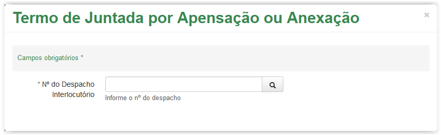
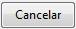
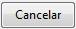

Vincular artefato
Verifique qual documento deseja anexar (se desejar pode Pesquisar o artefato) e logo após clique no ícone  correspondente, disponível na coluna Ações da grid Lista de artefatos.
correspondente, disponível na coluna Ações da grid Lista de artefatos.
Tela Vincular - Ícone opções
Após clicar no ícone o sistema apresenta uma lista com algumas opções. Selecione a opção Anexar:
Selecionando a opção Anexar
Após clicar na opção Anexar o sistema apresenta a mensagem de confirmação abaixo:
Mensagem de confirmação
Ao clicar no botão  o sistema retorna para a tela Vincular. Mas ao clicar no botão
o sistema retorna para a tela Vincular. Mas ao clicar no botão  o sistema apresenta uma mensagem de sucesso, altera o status para Sim na coluna Vinculado e registra a alteração na coluna Movimentação:
o sistema apresenta uma mensagem de sucesso, altera o status para Sim na coluna Vinculado e registra a alteração na coluna Movimentação:
Tela Vincular - Grid Lista de Artefatos após o documento ter sido anexado
Verifique qual processo deseja anexar (se desejar pode Pesquisar o artefato) e logo após clique no ícone correspondente, disponível na coluna Ações da grid Lista de artefatos.
Tela Vincular - Ícone opções
Após clicar no ícone o sistema apresenta uma lista com algumas opções. Selecione a opção Anexar:
Selecionando a opção Anexar
Após clicar na opção Anexar o sistema apresenta a mensagem de confirmação abaixo:
Mensagem de confirmação
Ao clicar no botão o sistema retorna para a tela Vincular. Mas ao clicar no botão o sistema apresenta a tela abaixo. Observe que o campo é obrigatório (Veja Nota 1):

Tela Termo de Juntada por Apensação ou Anexação
 Preenchendo o Termo de Juntada por Apensação ou Anexação!!
Preenchendo o Termo de Juntada por Apensação ou Anexação!!
Tela Termo de Juntada por Apensação ou Anexação - 1ª Parte
Tela Termo de Juntada por Apensação ou Anexação - 2ª Parte
Selecionando um cargo na lista do campo Cargo
 e será apresentada a tela abaixo. Para visualizar o Termo de Juntada clique no botão , caso desista clique no botão :
e será apresentada a tela abaixo. Para visualizar o Termo de Juntada clique no botão , caso desista clique no botão :Solicitação para apresentação ou download do documento em formato "PDF"
Termo de Juntada por Anexação
O Termo de Juntada por Anexação apresenta no cabeçalho o logotipo do ICMBio, o nome do setor e o título do documento. No rodapé é apresentado ainda a data e hora da impressão. Se desejar, o Termo de Juntada por Anexação poderá ser impresso.
Tela Vincular - Grid Lista de Artefatos após o processo ter sido anexado
IMPORTANTE!!
 Nota 1:
Nota 1:
Os campos obrigatórios são indicados pelo sinal de asterisco (*) na cor verde ao lado do nome. Quando algum ou nenhum campo obrigatório for preenchido, o sistema apresenta uma mensagem de erro: "Campos de preenchimento obrigatório não foram preenchidos.".
Comportamento da tela Termo de Juntada por Apensação ou Anexação ao clicar no ícone de pesquisa sem preencher o campo
Created with the Personal Edition of HelpNDoc: Free help authoring environment